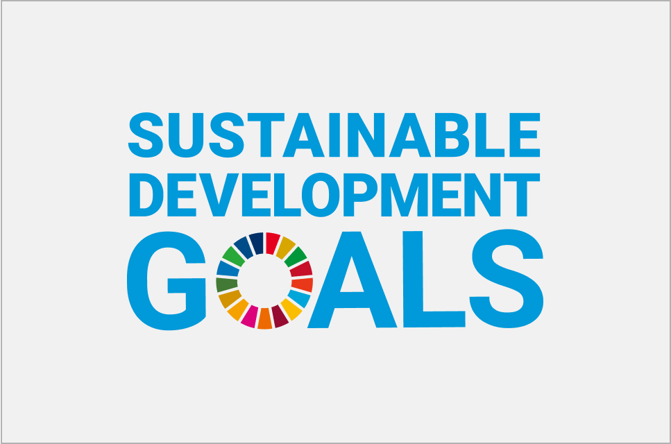
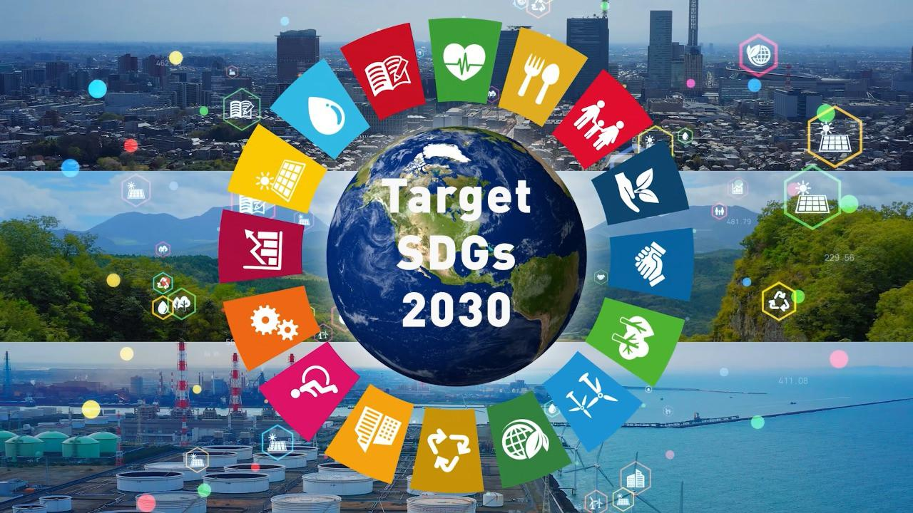
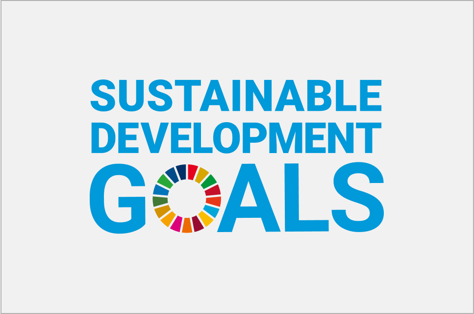
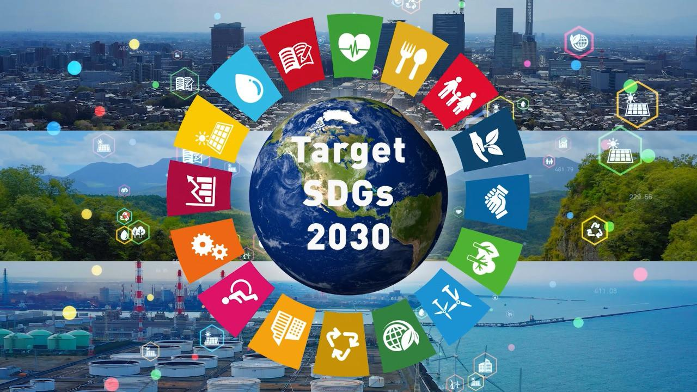

Hello Sanurians!
Hai hai Sanurians! Bagaimana kabar kalian? Semoga baik-baik saja ya. Pernahkah kalian berandai ingin merasakan dan mencapai dunia yang damai? Ya, tentunya hal tersebut merupakan mimpi indah yang menjadi kenyataan dan mustahil untuk digapai. Akan tetapi, bagaimana jika kesejahteraan tersebut lagi dalam proses? Mungkin kalian tidak merasakan hal tersebut karena progresnya yang lama, tetapi sejauh ini sudah berkembang loh! Daripada basa-basi lebih lanjut, penasaran kah kalian dengan dalang dibalik batu istimewa ini?
Kenalkan, Sustainable Development Goals (SDGs) atau Tujuan Pembangunan Berkelanjutan! Program ini dilaksanakan oleh Perserikatan Bangsa-Bangsa (PBB) sejak tahun 2015 dan Indonesia juga ikut serta di program ini tentunya. Program ini juga mempunyai berbagai tujuan yang mengatasi permasalahan-permasalahan global, memperkuat hak asasi manusia, dan mendorong pembangunan sosial, ekonomi, dan lingkungan hidup. Pembangunan berkelanjutan ini mempunyai jangka waktu hingga tahun 2030 untuk mencapai 17 tujuan beserta 169 rangka target. Jadi, apa saja tujuan-tujuan berikut? Yuk kita simak!
17 Tujuan Pembangunan Berkelanjutan (SDGs) yang telah disepakati secara global:
- Tanpa Kemiskinan (No Poverty)
- Tanpa Kelaparan (Zero Hunger)
- Kehidupan Sehat dan Sejahtera (Good Health and Well-being)
- Pendidikan Berkualitas (Quality Education)
- Kesetaraan Gender (Gender Equality)
- Air Bersih dan Sanitasi Layak (Clean Water and Sanitation)
- Energi Bersih dan Terjangkau (Affordable and Clean Energy)
- Pekerjaan Layak dan Pertumbuhan Ekonomi (Decent Work and Economic Growth)
- Industri, Inovasi, dan Infrastruktur (Industry, Innovation, and Infrastructure)
- Mengurangi Kesenjangan (Reduced Inequalities)
- Kota dan Pemukiman Berkelanjutan (Sustainable Cities and Communities)
- Konsumsi dan Produksi yang Bertanggung Jawab (Responsible Consumption and Production)
- Penanganan Perubahan Iklim (Climate Action)
- Ekosistem Lautan (Life Below Water)
- Ekosistem Daratan (Life on Land)
- Perdamaian, Keadilan, dan Kelembagaan yang Tangguh (Peace, Justice and Strong Institutions)
- Kemitraan untuk Mencapai Tujuan (Partnerships for the Goals)